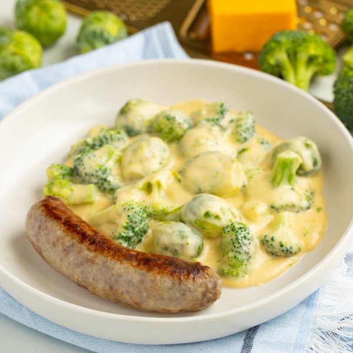

Pan-Fried Sausage with Cheesy Brussels Sprouts & Broccoli

Prep Time
40 min
Nutrition (per serving)
678.6 kcalCalories
36.1 gProtein
26.8 gCarbs
48.8 gFat
Full nutrition table
| Calories | 678.6 kcal |
| Total fat | 48.8 g |
| Saturated fat | 21.7 g |
| Trans fat | 0.9 g |
| Cholesterol | 141.3 mg |
| Sodium | 988.8 mg |
| Carbohydrates | 26.8 g |
| Fiber | 6.7 g |
| Sugars | 11.7 g |
| Protein | 36.1 g |
| Potassium | 1206.9 mg |
| Calcium | 467.7 mg |
| Iron | 3.8 mg |
| Vitamin A | 1952.1 IU |
| Vitamin C | 172.9 mg |
| Vitamin D | 114.9 IU |
Cookware
Ingredients
- 2 crownsbroccoli
- 1 lbBrussels sprouts
- ½ (8 oz) blockcheddar cheese
- 4pork sausages
- 20 fl ozwhole milk
- all-purpose flour
- black pepper
- butter, unsalted
- garlic powder
- salt
Steps
- Preheat a skillet over medium-high heat.
- Once the skillet is hot, add butter and swirl to coat the bottom; add sausages and cook, turning occasionally, until cooked through, 12-15 minutes. Transfer sausages to a plate and loosely cover with aluminum foil.2 tsp butter, unsalted
4 pork sausages - While the sausages are cooking, fill a large pot halfway with hot water (from the tap), cover, and bring to a boil.
- Meanwhile, wash, dry, and trim Brussels sprouts.1 lb Brussels sprouts
- Once the water in the pot is boiling, uncover, add salt and Brussels sprouts, and stir for a few seconds. Reduce heat to medium and cook until starting to soften, about 10 minutes.1 tsp salt
- Meanwhile, wash and dry broccoli; separate into bite-sized florets and cut stems into smaller pieces.2 crowns broccoli
- Once the Brussels sprouts start to soften, add broccoli and continue to cook until veggies are fork-tender, 5-6 minutes more. Drain veggies and transfer to a medium bowl; set aside. (Reserve pot for later use.)
- While the veggies are cooking, coarsely grate cheese and set aside.½ (8 oz) block cheddar cheese
- Return pot to medium heat. Once the pot is hot, add butter and swirl to coat the bottom; add flour and whisk until smooth. Cook, whisking frequently, until lightly golden, 1 minute.2 tbsp butter, unsalted
2 tbsp all-purpose flour - Slowly pour milk into the pot, whisking constantly. Continue whisking until the sauce has thickened, 3-4 minutes.20 fl oz (2 ½ cups) whole milk
- Add cheese and spices to the pot; whisk until cheese is melted and sauce is smooth.1 tsp salt
¼ tsp black pepper
¼ tsp garlic powder - Return drained veggies to the pot with the sauce and stir to combine. Remove from heat.
- To serve, divide sausages and cheesy veggies between plates. Enjoy!